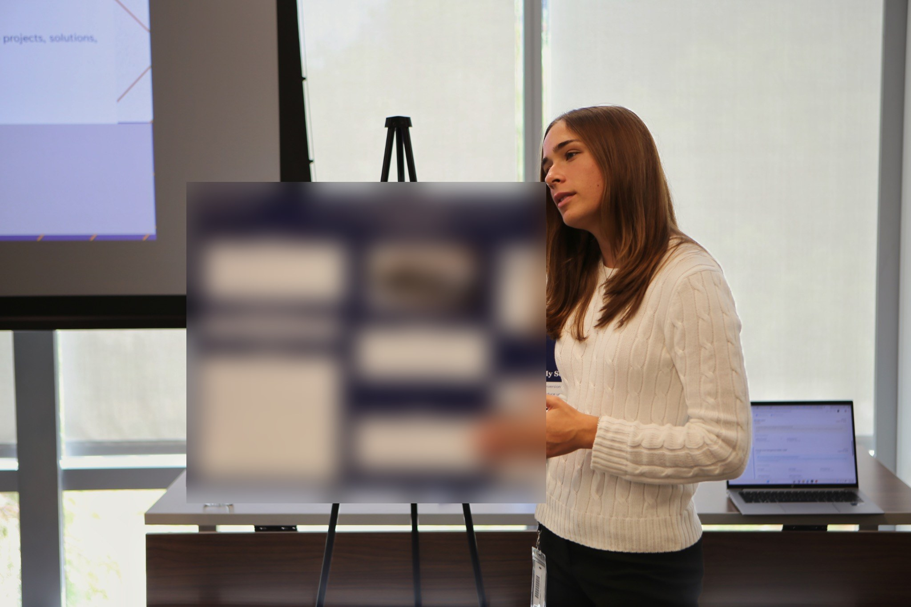

Progress at a glance
A clear overview of the conversion journey and actionable status.
LPL Financial / Technology Product Intern / Summer 2026
My ten-week internship focused on NextGen platform initiatives and Commonwealth conversion workflows, especially repapering. I went from understanding the operational friction to a product concept and engineering-ready requirements.

Presenting my end-of-internship capstone. Sensitive internal content has been obscured.
The context
LPL’s broader NextGen work aimed to make advisor experiences faster, clearer, and more scalable. My work centered on parts of the conversion experience where advisors and support teams had to coordinate complicated steps, track status, and resolve exceptions.
I wasn't the owner of NextGen or the overall conversion program. My role was to investigate specific pain points, propose a more useful experience, and help teams turn the opportunity into concrete product work.
01 / The problem
Conversion workflows involve multiple dependencies and teams. Limited visibility into progress, priorities, and exceptions can make it harder for advisors to know what needs attention. That creates additional questions for support teams and more time spent coordinating the process.
02 / Navigating ambiguity
I was handed an objective, not a plan. Each constraint shaped what I did next.
I documented friction points and connected user needs to the technical and operational constraints behind them.
Themes from discovery; not independently quantified usability findings.
03 / The business opportunity
Approximate time a single repapering request could take an advisor.
Estimated annual time savings from the proposed solution overall.
The prototype was a proposed direction, not a shipped product, so there’s no post-launch data.
The ~200-hour figure is an estimate from my capstone research, not a validated result. The full calculation isn’t shown here.
04 / Product decisions
The challenge wasn't to put every possible detail on a dashboard. It was to identify the information that could meaningfully reduce confusion without overwhelming users or introducing unnecessary complexity.
A clear overview of the conversion journey and actionable status.
Make blockers understandable and guide users toward the appropriate action.
Keep supporting information available without turning the interface into another complex workflow.
These are public-safe summaries of the product rationale, not the actual internal priority matrix.
05 / The proposed solution
I built an interactive high-fidelity dashboard concept using HTML, CSS, and JavaScript to explore how advisors might see a consolidated view of progress, priorities, and contextual guidance.
I translated the direction into product documentation and frontend/backend user stories and collaborated with my manager on roadmap work for Commonwealth-related engineering tickets.
The prototype was a proposed direction—not a shipped product. The original screens and documentation are proprietary, so they aren't reproduced here.
06 / Engineering feedback
Engineers told me some of my user stories had too much detail, while others were missing context.
I learned more about the underlying systems, asked engineers what information they actually needed, and revised the stories.
A story is useful when the people building it understand it the same way I do.
Requirements create shared understanding, not just documentation.
07 / Outcomes
A high-fidelity dashboard concept in HTML, CSS, and JavaScript. Proposed, not shipped.
Presented the prototype and recommendations to senior leaders; received encouraging feedback and interest in possible implementation.
Created structured product requirements and user stories to help turn ambiguous needs into work engineers could evaluate.
Projected savings are shown above. I don't have production adoption or realized time-saved metrics for this capstone, so I haven't claimed them.
Beyond the capstone
Many of the AI tools, integrations, and ideas I was experimenting with were new to people on my team. I learned them on my own, built workflows with them, and then taught colleagues how to use them in product management and development work. This was a separate workstream from the dashboard prototype.
Finding information took time, and AI tools could help with work the team already did.
I taught myself Cursor, MCP integrations, and how models use context, mostly by experimenting.
Two knowledge agents and reusable Cursor skills, including my PRD writer.
Hands-on sessions on connecting tools, giving AI good context, choosing models, and prompting.
Helped people apply these to their own requirements, user stories, and documentation, with review built in.
What I taughtConnecting Jira with Cursor · the Figma MCP and other MCP integrations · how models use context · managing context in long sessions · choosing a model for the task · prompt engineering · reusable Cursor skills
AI knowledge agents I built independently to make internal information easier to find.
Active internal users of one of those agents. This is separate from the people I trained.
Colleagues across two teams I taught in hands-on sessions.
The demos on my AI page are fictional reconstructions. No internal data, prompts, or screens are shown. What I taught, in more detail →
What I took away
I got better at asking questions across teams and breaking messy workflows into smaller decisions. I also learned to hold off on adding features until I understood what would actually help.